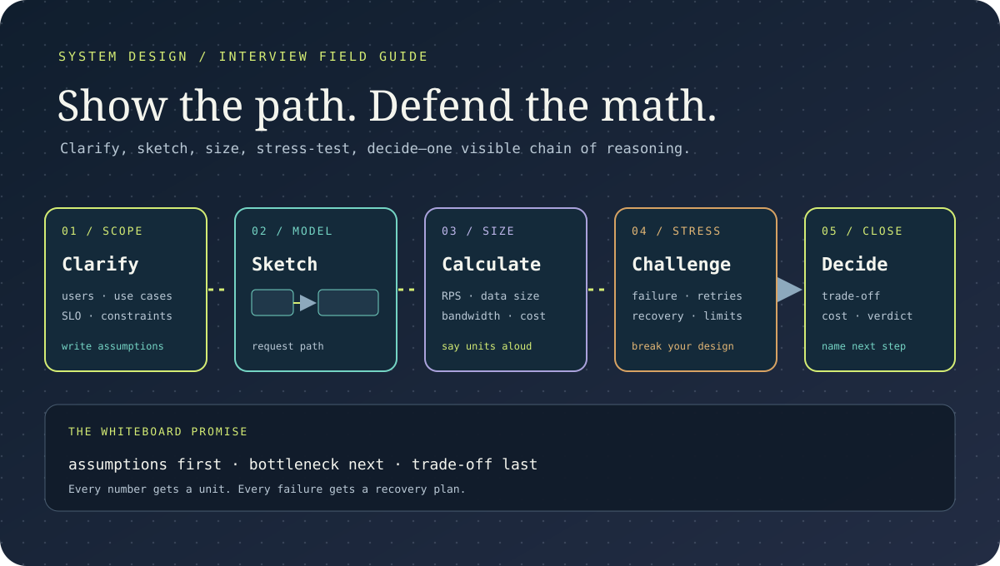

System Design Interview Bootcamp: 15 Rounds From the Whiteboard
Nine years of interviews from both sides of the table taught me one discipline: clarify first, draw second, speak math aloud plus close with a bill. Each round rehearses on a real production postmortem with numbers you can re-run. The bill hides in the boundary.
TL;DR: Fifteen interview rounds with live diagrams, from clarification to RPS math plus failure drills plus cost closes. Built from production postmortems with verdict math.
By Mukul Kumar Mishra · Interview course · Updated October 10, 2026

What you will be able to do
- Clarify any prompt in five minutes, diagram the happy path in ten, plus narrate RPS plus storage plus bandwidth math aloud.
- Pick storage plus caching plus queues with reasons, shard hot keys, trade consistency per workflow, plus murder your own diagram with drills.
- Close every round with a per-million bill, own one subsystem to the metal, plus tell behavioral stories with measured receipts.
- Rehearse mock loops with tapes plus scores, then ship a two-week offer calendar with a decision log.
- Answer interviewers with boxes plus numbers plus verdicts, in that order, every round.
How interviewers test this course: clarification first, math aloud second, depth with prices third. Lesson 14 rehearses the loop.
Clarify First
Assumption first: the fastest failure is solving the wrong prompt. Spend five minutes on users plus scale plus constraints before touching the marker. Ask read-write ratio plus latency SLO plus consistency needs plus budget shape. Clarification without notes is theater. Write every answer where the interviewer sees it.
- Repeat the prompt back with numbers attached. Misheard scale wastes thirty minutes.
- Name the non-goals aloud. Scope cuts earn more points than extra boxes.
- Deep dive: NATS Four Hours, schedule-hours versus system-minutes.
Q1. Design URL shortener for 100M links a month. What do you ask first? Seen at: backend plus full-stack loops.
Q2. Interviewer says latency must stay under 200ms p99. What constraint follows? Seen at: backend plus platform loops.
Scope set. Now draw. Lesson 02: Boxes →
Boxes Before Arrows
Draw the happy path end to end in four boxes before any deep dive. Client plus API plus service plus store covers most prompts. Label every arrow with protocol plus payload size. Depth without a map strands both of you. The board is a contract, not decoration.
- Timebox the overview to ten minutes. Detail belongs in rounds, not the opener.
- Say uncertain parts aloud plus mark them. Hidden guesses fail silently at review.
- Deep dive: Figma Multiplayer, fan-out drawn before depth.
Q1. Sketch TinyURL end to end in under ten minutes. What are the four boxes? Seen at: backend plus full-stack loops.
Q2. Where do you mark uncertainty on the board? Seen at: platform plus backend loops.
Map drawn. Now speak numbers. Lesson 03: Math →
Numbers Out Loud
Interview math is narration, not arithmetic. State users plus actions per user plus peak factor, then derive RPS plus storage plus bandwidth in round numbers. Correct powers of ten beat precise digits. Silent scribbling scores zero even when right. Talk through every exponent.
- Round aggressively: 86,400 seconds becomes 100K. Speed signals fluency.
- Derive storage for five years plus bandwidth per second. Both fit one board corner.
- Deep dive: Discord Messages Scale, trillions priced per row.
Q1. Price storage for 10K photos a day at 2MB each over five years. Seen at: backend plus data loops.
Q2. Peak factor hits 5x average. What breaks first in your sketch? Seen at: SRE plus backend loops.
Math spoken. Now pick storage. Lesson 04: Storage →
Storage Choices
Match store to access pattern, not fashion. Relational for transactions plus joins. Wide-column plus key-value for massive scale with simple reads. Object stores for blobs with CDN in front. One sentence of justification per choice beats a catalog. Wrong store with reasons still scores.
- Separate hot reads from cold archives. Tiers decide cost more than engines.
- Name the index per hot query. Unindexed hot paths fail the deep dive.
- Deep dive: Supabase Postgres Scale, 2M databases behind one promise.
Q1. Chat history for 50M users. SQL or wide-column? Defend it. Seen at: backend plus data loops.
Q2. When does object storage plus CDN beat any database? Seen at: full-stack plus backend loops.
Store picked. Now cache it. Lesson 05: Cache →
Cache Math
Caches turn repeated reads into memory hits. Quote hit rate plus TTL plus eviction plus stampede guard for every cache you draw. A cache without invalidation is a bug with a hit ratio. Price the miss path first. Interviewers probe invalidation hardest.
- Size cache from hot working set, not total data. Ten percent of keys serve ninety percent of reads.
- Add request coalescing for thundering reads. One fill serves the crowd.
- Deep dive: ShareChat Assignment, 95 percent hits by fat rows.
Q1. Celebrity posts spike reads 100x. What guards the cache? Seen at: backend plus platform loops.
Q2. TTL expires during peak. What prevents the stampede? Seen at: SRE plus backend loops.
Hits priced. Now split sync from async. Lesson 06: Queues →
Queue Versus Sync
Synchronous calls suit reads needing answers now. Queues suit writes surviving bursts plus retries. Draw the sync path for latency plus the async lane for durability in every design. Mixing them without reasons invites the hardest follow-ups. Latency budgets decide the split.
- Queue depth equals burst rate times drain time. Little Law answers sizing live.
- Name dead-letter handling plus replay. Queues without replays lose data politely.
- Deep dive: Kafka Rebalance Storm, 40,000 partitions paused.
Q1. Payments need receipts now plus settlement later. Sync or queue each leg? Seen at: backend plus fintech loops.
Q2. Queue depth triples at noon. What drains it safely? Seen at: SRE plus data loops.
Lanes split. Now shard the heat. Lesson 07: Sharding →
Sharding Keys
Sharding spreads rows plus queries across nodes by key. Hash keys balance evenly. Range keys order well plus hotspot badly. Hot keys need splitting or caching regardless of scheme. Key choice without hotspot analysis fails review.
- Estimate rows per shard at five-year scale. Past ten million per shard, split sooner.
- Plan resharding before launch. Static shard counts expire with growth.
- Deep dive: Stripe Ledger Scale, ledger growth with pruning.
Q1. User handles cluster by geography. Hash or range? Defend it. Seen at: backend plus data loops.
Q2. One celebrity owns 5 percent of rows. What saves the shard? Seen at: platform plus backend loops.
Heat spread. Now trade consistency. Lesson 08: Consistency →
Consistency Tradeoffs
Strong consistency simplifies reasoning plus costs latency plus availability. Eventual consistency scales plus demands conflict plans. State your choice per workflow, not per system. Mixed models with reasons show seniority. CAP without application is recital.
- Count cross-region round trips per write. Each adds tens of milliseconds plus failure modes.
- Design idempotency for retried writes. At-least-once without keys double-charges.
- Deep dive: Doltgres Data Loss, metadata missed plus data erased.
Q1. Likes counter versus wallet balance. Which consistency each? Seen at: backend plus fintech loops.
Q2. Two regions diverge during partition. What reconciles them? Seen at: platform plus backend loops.
Trades priced. Now break it live. Lesson 09: Failure →
Failure Drills
Interviewers hire people who murder their own diagrams. Walk through dead zones plus slow disks plus retry storms plus poison deploys. Show health checks plus failover plus budgets for each. Designs without funerals read junior. Kill one box per round minimum.
- Budget retries at 6x calm load aloud. Numbers prove the drill ran.
- Pin control away from sick zones. Shared brains spread single-zone pain.
- Deep dive: GCP us-central1, incompatible transceivers isolated capacity in parts of two zones.
Q1. Your primary zone goes dark mid-demo. What serves traffic? Seen at: SRE plus backend loops.
Q2. Deploys poison 10 percent of hosts. What rolls it back? Seen at: platform plus SRE loops.
Deaths survived. Now close with cost. Lesson 10: Cost →
Cost Close
End every interview with a cost sketch. Price steady state per million requests plus name the dearest box plus one lever that halves it. Interviewers remember closers. Adjectives fade. Bills stick. The bill hides in the boundary, say it with numbers.
- Attribute cost per request per tier. Unattributed totals sound invented.
- Offer the tradeoff explicitly: cheaper with slower tail, or faster with fatter invoice.
- Deep dive: LLM Inference Cost, per-task math that closes.
Q1. Price your URL shortener per million links. What dominates? Seen at: backend plus full-stack loops.
Q2. Cut the design bill 40 percent. What goes first? Seen at: platform plus backend loops.
Closed with bills. Now the API round. Lesson 11: API →
API Round
API interviews test contracts plus idempotency plus limits plus versioning in forty minutes. Lead with resources plus verbs, then keys per intent, then rate math, then webhook retries. Version without breakage closes it. Endpoints without error models read junior.
- Size rate limits from capacity: RPS per client times clients plus headroom.
- Replay webhooks inside windows with signatures. Unsigned retries invite forgery.
- Deep dive: API Design Course, fifteen gateway lessons.
Q1. Design checkout APIs that survive double-clicks. What prevents double charge? Seen at: backend plus fintech loops.
Q2. Version 2 breaks mobile clients. What ships instead? Seen at: full-stack plus backend loops.
Contracts signed. Now go deep. Lesson 12: Deep Dive →
Deep Dive Round
Pick one subsystem plus own it to the metal: schema plus indexes plus queries plus failure modes plus cost. Depth in one box beats shallows in five. Narrate choices as bets with prices. Interviewers promote owners, not tourists.
- Write two queries with plans plus index shapes. Concrete beats abstract.
- Close the dive with its own bill plus its own funeral. Owners price both.
- Deep dive: Razorpay Kafka, 3,000 connections too many.
Q1. Own the feed ranking store end to end. Schema plus indexes plus cost. Seen at: backend plus data loops.
Q2. Your picked box doubles traffic overnight. What breaks first? Seen at: SRE plus platform loops.
Depth owned. Now prove character. Lesson 13: Behavioral →
Behavioral With Receipts
Behavioral rounds filter storytellers from owners. Bring three stories with numbers: incident led, conflict resolved, deadline renegotiated. Structure as situation plus action plus measured result. Vague verbs fail. Receipts pass.
- Quantify everything: minutes saved, errors cut, revenue protected. Estimates labeled honestly.
- Name what you would redo. Growth without regret reads rehearsed.
- Deep dive: MoEngage Millisecond, owned hardware, owned numbers.
Q1. Tell me about the worst outage you owned. Timelines plus owners plus fix. Seen at: every loop.
Q2. Disagree with your manager on architecture. What happened? Seen at: leadership plus backend loops.
Character proven. Now rehearse fully. Lesson 14: Mocks →
Mock Loop
Run two full mock loops before real ones: one friendly plus one hostile. Record yourself. Count filler words plus silent stretches plus unpriced claims. Fix the worst three, not all thirty. Rehearsal converts knowledge into offers.
- Score each round on clarify plus math plus depth plus close. Weakest pillar gets the week.
- Rehearse the cost close until it fits ninety seconds. Closers get remembered.
- Deep dive: System Design Course, fifteen lessons of material.
Q1. Your mocks stall at estimation. What drill fixes it in a week? Seen at: self review.
Q2. Hostile interviewer kills every box. What keeps you moving? Seen at: self review.
Rehearsed. Now ship the week. Lesson 15: Offer →
Offer Week
Capstone: run a real two-week loop calendar. Week one drills estimation plus two deep dives daily. Week two runs mocks plus applies to twelve matching roles. Track every round in a decision log with verdicts plus prices. Graduates carry offers, not certificates.
- Exit criteria: three mocks passed plus cost close under ninety seconds plus log complete.
- Compare offers on growth plus scope plus comp in that order. Title without scope is rent.
- Deep dive: Postgres Course, depth material for dive rounds.
Q1. Plan my next fourteen days before onsite season. Seen at: self review.
Q2. Two offers diverge on scope versus pay. What decides? Seen at: self review.
Bootcamp complete. Start the companion. System Design Course →